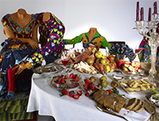
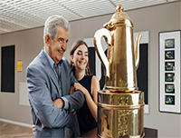
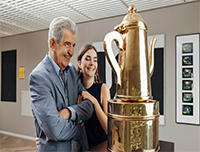
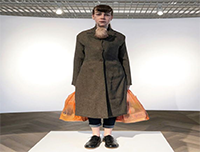
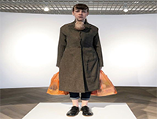

Op deze website kunt u onze mooie kunst bewonderen online.
Wij zijn erg trots met de kunst die wij kunnen laten zien aan onze klanten, wij willen graag dat u nadenkt over het kunstwerk aan u laten zien wordt, de kunstwerken zijn meestal gemaakt van eten die niet meer wordt gebruikt, het eten wordt dan gerecycled en herbruikt voor deze kunstwerken.
 

 


Wij hebben ook een grote gallerij beschikbaar online waardoor u het kan bekijken, maar niet alle dingen zijn in de gallerij. De meeste kunstwerken kunt u bekijken in onze mooie museum gelokeerd in Lisse, u bent van harte welkom om deze museum te bezoeken.